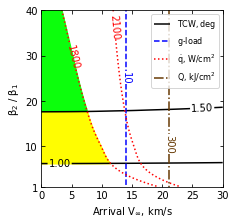
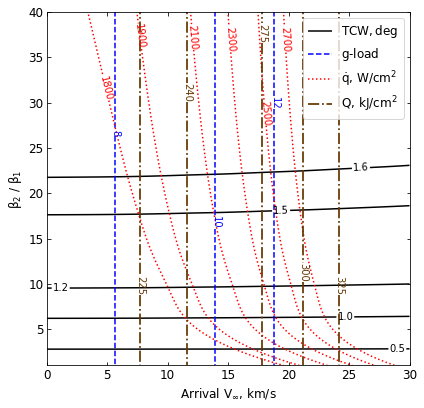

07 - b - Saturn - Feasibility Charts - Drag¶
[1]:
from AMAT.planet import Planet
from AMAT.vehicle import Vehicle
import numpy as np
from scipy import interpolate
import matplotlib.pyplot as plt
from matplotlib import rcParams
from matplotlib.patches import Polygon
import os
[2]:
# Set up the planet and atmosphere model.
planet=Planet("SATURN")
planet.h_skip = 1000e3
planet.h_low = 50e3
planet.loadAtmosphereModel('../atmdata/Saturn/saturn-nominal.dat', 0 , 1 , 2, 3, heightInKmFlag=True)
[3]:
beta1 = 20.0
runID = 'saturn-drag-'
[7]:
vinf_kms_array = np.linspace( 0.0, 30.0, 11)
betaRatio_array = np.linspace( 1.0, 41.0 , 11)
v0_kms_array = np.zeros(len(vinf_kms_array))
v0_kms_array[:] = np.sqrt(1.0*(vinf_kms_array[:]*1E3)**2.0 + 2*np.ones(len(vinf_kms_array))*\
planet.GM/(planet.RP+1000.0*1.0E3))/1.0E3
overShootLimit_array = np.zeros((len(v0_kms_array),len(betaRatio_array)))
underShootLimit_array = np.zeros((len(v0_kms_array),len(betaRatio_array)))
exitflag_os_array = np.zeros((len(v0_kms_array),len(betaRatio_array)))
exitflag_us_array = np.zeros((len(v0_kms_array),len(betaRatio_array)))
TCW_array = np.zeros((len(v0_kms_array),len(betaRatio_array)))
[8]:
for i in range(0,len(v0_kms_array)):
for j in range(0,len(betaRatio_array)):
vehicle=Vehicle('DMVehicle', 300.0, beta1, 0.0, 3.1416, 0.0, 0.10, planet)
vehicle.setInitialState(1000.0,0.0,0.0,v0_kms_array[i],0.0,-4.5,0.0,0.0)
vehicle.setSolverParams(1E-6)
vehicle.setDragModulationVehicleParams(beta1,betaRatio_array[j])
underShootLimit_array[i,j], exitflag_us_array[i,j] = vehicle.findUnderShootLimitD(2400.0, 1.0, -15.0,-4.0,1E-10,4000)
overShootLimit_array[i,j] , exitflag_os_array[i,j] = vehicle.findOverShootLimitD (2400.0, 1.0, -15.0,-4.0,1E-10,4000)
TCW_array[i,j] = overShootLimit_array[i,j] - underShootLimit_array[i,j]
print('VINF: '+str(vinf_kms_array[i])+' km/s, BETA RATIO: '+str(betaRatio_array[j])+' TCW: '+str(TCW_array[i,j])+' deg.')
np.savetxt('../data/jsr-paper/saturn/'+runID+'vinf_kms_array.txt',vinf_kms_array)
np.savetxt('../data/jsr-paper/saturn/'+runID+'v0_kms_array.txt',v0_kms_array)
np.savetxt('../data/jsr-paper/saturn/'+runID+'betaRatio_array.txt',betaRatio_array)
np.savetxt('../data/jsr-paper/saturn/'+runID+'overShootLimit_array.txt',overShootLimit_array)
np.savetxt('../data/jsr-paper/saturn/'+runID+'exitflag_os_array.txt',exitflag_os_array)
np.savetxt('../data/jsr-paper/saturn/'+runID+'underShootLimit_array.txt',underShootLimit_array)
np.savetxt('../data/jsr-paper/saturn/'+runID+'exitflag_us_array.txt',exitflag_us_array)
np.savetxt('../data/jsr-paper/saturn/'+runID+'TCW_array.txt',TCW_array)
VINF: 0.0 km/s, BETA RATIO: 1.0 TCW: 0.0 deg.
VINF: 0.0 km/s, BETA RATIO: 5.0 TCW: 0.8760489264823264 deg.
VINF: 0.0 km/s, BETA RATIO: 9.0 TCW: 1.1740835885866545 deg.
VINF: 0.0 km/s, BETA RATIO: 13.0 TCW: 1.353705618152162 deg.
VINF: 0.0 km/s, BETA RATIO: 17.0 TCW: 1.4829480180342216 deg.
VINF: 0.0 km/s, BETA RATIO: 21.0 TCW: 1.5833320954698138 deg.
VINF: 0.0 km/s, BETA RATIO: 25.0 TCW: 1.6647800668724813 deg.
VINF: 0.0 km/s, BETA RATIO: 29.0 TCW: 1.7335814872858464 deg.
VINF: 0.0 km/s, BETA RATIO: 33.0 TCW: 1.7925984178727958 deg.
VINF: 0.0 km/s, BETA RATIO: 37.0 TCW: 1.8447420470474754 deg.
VINF: 0.0 km/s, BETA RATIO: 41.0 TCW: 1.8914975341031095 deg.
VINF: 3.0 km/s, BETA RATIO: 1.0 TCW: 0.0 deg.
VINF: 3.0 km/s, BETA RATIO: 5.0 TCW: 0.875843480709591 deg.
VINF: 3.0 km/s, BETA RATIO: 9.0 TCW: 1.1734758539678296 deg.
VINF: 3.0 km/s, BETA RATIO: 13.0 TCW: 1.3534271934986464 deg.
VINF: 3.0 km/s, BETA RATIO: 17.0 TCW: 1.4826413269911427 deg.
VINF: 3.0 km/s, BETA RATIO: 21.0 TCW: 1.58268093989318 deg.
VINF: 3.0 km/s, BETA RATIO: 25.0 TCW: 1.6644287743474706 deg.
VINF: 3.0 km/s, BETA RATIO: 29.0 TCW: 1.7329078165930696 deg.
VINF: 3.0 km/s, BETA RATIO: 33.0 TCW: 1.7922349564250908 deg.
VINF: 3.0 km/s, BETA RATIO: 37.0 TCW: 1.8443807203875622 deg.
VINF: 3.0 km/s, BETA RATIO: 41.0 TCW: 1.8908379746353603 deg.
VINF: 6.0 km/s, BETA RATIO: 1.0 TCW: 0.0 deg.
VINF: 6.0 km/s, BETA RATIO: 5.0 TCW: 0.8753171940115863 deg.
VINF: 6.0 km/s, BETA RATIO: 9.0 TCW: 1.1727542429507594 deg.
VINF: 6.0 km/s, BETA RATIO: 13.0 TCW: 1.352648687461624 deg.
VINF: 6.0 km/s, BETA RATIO: 17.0 TCW: 1.4818653312686365 deg.
VINF: 6.0 km/s, BETA RATIO: 21.0 TCW: 1.5818366079111001 deg.
VINF: 6.0 km/s, BETA RATIO: 25.0 TCW: 1.6635100426137797 deg.
VINF: 6.0 km/s, BETA RATIO: 29.0 TCW: 1.7319718119106255 deg.
VINF: 6.0 km/s, BETA RATIO: 33.0 TCW: 1.7913037956532207 deg.
VINF: 6.0 km/s, BETA RATIO: 37.0 TCW: 1.8434694505267544 deg.
VINF: 6.0 km/s, BETA RATIO: 41.0 TCW: 1.8899542276340071 deg.
VINF: 9.0 km/s, BETA RATIO: 1.0 TCW: 0.0 deg.
VINF: 9.0 km/s, BETA RATIO: 5.0 TCW: 0.8741854125692043 deg.
VINF: 9.0 km/s, BETA RATIO: 9.0 TCW: 1.1715912469298928 deg.
VINF: 9.0 km/s, BETA RATIO: 13.0 TCW: 1.3511196427643881 deg.
VINF: 9.0 km/s, BETA RATIO: 17.0 TCW: 1.4802798842501943 deg.
VINF: 9.0 km/s, BETA RATIO: 21.0 TCW: 1.5801531692268327 deg.
VINF: 9.0 km/s, BETA RATIO: 25.0 TCW: 1.661720684824104 deg.
VINF: 9.0 km/s, BETA RATIO: 29.0 TCW: 1.7301434452019748 deg.
VINF: 9.0 km/s, BETA RATIO: 33.0 TCW: 1.789212344061525 deg.
VINF: 9.0 km/s, BETA RATIO: 37.0 TCW: 1.8414037955881213 deg.
VINF: 9.0 km/s, BETA RATIO: 41.0 TCW: 1.8881957925332244 deg.
VINF: 12.0 km/s, BETA RATIO: 1.0 TCW: 0.0 deg.
VINF: 12.0 km/s, BETA RATIO: 5.0 TCW: 0.8728047379045165 deg.
VINF: 12.0 km/s, BETA RATIO: 9.0 TCW: 1.1694043632087414 deg.
VINF: 12.0 km/s, BETA RATIO: 13.0 TCW: 1.3488931197643979 deg.
VINF: 12.0 km/s, BETA RATIO: 17.0 TCW: 1.4779661885477253 deg.
VINF: 12.0 km/s, BETA RATIO: 21.0 TCW: 1.5776651823834982 deg.
VINF: 12.0 km/s, BETA RATIO: 25.0 TCW: 1.6588475429816754 deg.
VINF: 12.0 km/s, BETA RATIO: 29.0 TCW: 1.7272314222573186 deg.
VINF: 12.0 km/s, BETA RATIO: 33.0 TCW: 1.7865994933017646 deg.
VINF: 12.0 km/s, BETA RATIO: 37.0 TCW: 1.8388555627971073 deg.
VINF: 12.0 km/s, BETA RATIO: 41.0 TCW: 1.88537541043479 deg.
VINF: 15.0 km/s, BETA RATIO: 1.0 TCW: 0.0 deg.
VINF: 15.0 km/s, BETA RATIO: 5.0 TCW: 0.8716925507615088 deg.
VINF: 15.0 km/s, BETA RATIO: 9.0 TCW: 1.1673687271177187 deg.
VINF: 15.0 km/s, BETA RATIO: 13.0 TCW: 1.3468245211988688 deg.
VINF: 15.0 km/s, BETA RATIO: 17.0 TCW: 1.4757112114748452 deg.
VINF: 15.0 km/s, BETA RATIO: 21.0 TCW: 1.5752090907408274 deg.
VINF: 15.0 km/s, BETA RATIO: 25.0 TCW: 1.656267363607185 deg.
VINF: 15.0 km/s, BETA RATIO: 29.0 TCW: 1.7246512985875597 deg.
VINF: 15.0 km/s, BETA RATIO: 33.0 TCW: 1.784057717777614 deg.
VINF: 15.0 km/s, BETA RATIO: 37.0 TCW: 1.8360824723349651 deg.
VINF: 15.0 km/s, BETA RATIO: 41.0 TCW: 1.882849715570046 deg.
VINF: 18.0 km/s, BETA RATIO: 1.0 TCW: 0.0 deg.
VINF: 18.0 km/s, BETA RATIO: 5.0 TCW: 0.869737593769969 deg.
VINF: 18.0 km/s, BETA RATIO: 9.0 TCW: 1.1647198861392098 deg.
VINF: 18.0 km/s, BETA RATIO: 13.0 TCW: 1.3441250302130356 deg.
VINF: 18.0 km/s, BETA RATIO: 17.0 TCW: 1.4724891390360426 deg.
VINF: 18.0 km/s, BETA RATIO: 21.0 TCW: 1.5717833395538037 deg.
VINF: 18.0 km/s, BETA RATIO: 25.0 TCW: 1.6527615745653748 deg.
VINF: 18.0 km/s, BETA RATIO: 29.0 TCW: 1.7211325206590118 deg.
VINF: 18.0 km/s, BETA RATIO: 33.0 TCW: 1.7803512567625148 deg.
VINF: 18.0 km/s, BETA RATIO: 37.0 TCW: 1.8326092594361398 deg.
VINF: 18.0 km/s, BETA RATIO: 41.0 TCW: 1.8793215838086326 deg.
VINF: 21.0 km/s, BETA RATIO: 1.0 TCW: 0.0 deg.
VINF: 21.0 km/s, BETA RATIO: 5.0 TCW: 0.8679448547991342 deg.
VINF: 21.0 km/s, BETA RATIO: 9.0 TCW: 1.1622052049642662 deg.
VINF: 21.0 km/s, BETA RATIO: 13.0 TCW: 1.341471725012525 deg.
VINF: 21.0 km/s, BETA RATIO: 17.0 TCW: 1.4694987058392144 deg.
VINF: 21.0 km/s, BETA RATIO: 21.0 TCW: 1.5685711305341101 deg.
VINF: 21.0 km/s, BETA RATIO: 25.0 TCW: 1.6494754467275925 deg.
VINF: 21.0 km/s, BETA RATIO: 29.0 TCW: 1.7178828916657949 deg.
VINF: 21.0 km/s, BETA RATIO: 33.0 TCW: 1.7771069156369776 deg.
VINF: 21.0 km/s, BETA RATIO: 37.0 TCW: 1.8293090342194773 deg.
VINF: 21.0 km/s, BETA RATIO: 41.0 TCW: 1.875712882996595 deg.
VINF: 24.0 km/s, BETA RATIO: 1.0 TCW: 0.0 deg.
VINF: 24.0 km/s, BETA RATIO: 5.0 TCW: 0.8658819610864157 deg.
VINF: 24.0 km/s, BETA RATIO: 9.0 TCW: 1.1591839040629566 deg.
VINF: 24.0 km/s, BETA RATIO: 13.0 TCW: 1.3382073393877363 deg.
VINF: 24.0 km/s, BETA RATIO: 17.0 TCW: 1.465857065122691 deg.
VINF: 24.0 km/s, BETA RATIO: 21.0 TCW: 1.5645115631486988 deg.
VINF: 24.0 km/s, BETA RATIO: 25.0 TCW: 1.645346015204268 deg.
VINF: 24.0 km/s, BETA RATIO: 29.0 TCW: 1.713797433905711 deg.
VINF: 24.0 km/s, BETA RATIO: 33.0 TCW: 1.772952474449994 deg.
VINF: 24.0 km/s, BETA RATIO: 37.0 TCW: 1.8250562745015486 deg.
VINF: 24.0 km/s, BETA RATIO: 41.0 TCW: 1.87135832128115 deg.
VINF: 27.0 km/s, BETA RATIO: 1.0 TCW: 0.0 deg.
VINF: 27.0 km/s, BETA RATIO: 5.0 TCW: 0.8635587606040644 deg.
VINF: 27.0 km/s, BETA RATIO: 9.0 TCW: 1.1561992924107471 deg.
VINF: 27.0 km/s, BETA RATIO: 13.0 TCW: 1.3346148843484116 deg.
VINF: 27.0 km/s, BETA RATIO: 17.0 TCW: 1.4618656777674914 deg.
VINF: 27.0 km/s, BETA RATIO: 21.0 TCW: 1.5605519130840548 deg.
VINF: 27.0 km/s, BETA RATIO: 25.0 TCW: 1.6413600214436883 deg.
VINF: 27.0 km/s, BETA RATIO: 29.0 TCW: 1.7095688591653015 deg.
VINF: 27.0 km/s, BETA RATIO: 33.0 TCW: 1.768830813736713 deg.
VINF: 27.0 km/s, BETA RATIO: 37.0 TCW: 1.8205984519809135 deg.
VINF: 27.0 km/s, BETA RATIO: 41.0 TCW: 1.8667758169249282 deg.
VINF: 30.0 km/s, BETA RATIO: 1.0 TCW: 0.0 deg.
VINF: 30.0 km/s, BETA RATIO: 5.0 TCW: 0.8609772741692723 deg.
VINF: 30.0 km/s, BETA RATIO: 9.0 TCW: 1.1529721405167948 deg.
VINF: 30.0 km/s, BETA RATIO: 13.0 TCW: 1.3308813936528168 deg.
VINF: 30.0 km/s, BETA RATIO: 17.0 TCW: 1.4575389728197479 deg.
VINF: 30.0 km/s, BETA RATIO: 21.0 TCW: 1.5560672250358039 deg.
VINF: 30.0 km/s, BETA RATIO: 25.0 TCW: 1.6368380951826111 deg.
VINF: 30.0 km/s, BETA RATIO: 29.0 TCW: 1.705149168454227 deg.
VINF: 30.0 km/s, BETA RATIO: 33.0 TCW: 1.7640654517163057 deg.
VINF: 30.0 km/s, BETA RATIO: 37.0 TCW: 1.8157036643387983 deg.
VINF: 30.0 km/s, BETA RATIO: 41.0 TCW: 1.861744529880525 deg.
[10]:
acc_net_g_max_array = np.zeros((len(v0_kms_array),len(betaRatio_array)))
stag_pres_atm_max_array = np.zeros((len(v0_kms_array),len(betaRatio_array)))
q_stag_total_max_array = np.zeros((len(v0_kms_array),len(betaRatio_array)))
heatload_max_array = np.zeros((len(v0_kms_array),len(betaRatio_array)))
for i in range(0,len(v0_kms_array)):
for j in range(0,len(betaRatio_array)):
vehicle=Vehicle('DMVehicle', 300, beta1, 0.0, 3.1416, 0.0, 0.10, planet)
vehicle.setInitialState(1000.0,0.0,0.0,v0_kms_array[i],0.0,overShootLimit_array[i,j],0.0,0.0)
vehicle.setSolverParams(1E-5)
vehicle.propogateEntry (2400.0, 1.0, 0.0)
# Extract and save variables to plot
t_min_os = vehicle.t_minc
h_km_os = vehicle.h_kmc
acc_net_g_os = vehicle.acc_net_g
q_stag_con_os = vehicle.q_stag_con
q_stag_rad_os = vehicle.q_stag_rad
rc_os = vehicle.rc
vc_os = vehicle.vc
stag_pres_atm_os = vehicle.computeStagPres(rc_os,vc_os)/(1.01325E5)
heatload_os = vehicle.heatload
vehicle=Vehicle('DMVehicle', 300.0, beta1, 0.0, 3.1416, 0.0, 0.10, planet)
vehicle.setInitialState(1000.0,0.0,0.0,v0_kms_array[i],0.0,underShootLimit_array[i,j],0.0,0.0)
vehicle.setSolverParams( 1E-5)
vehicle.propogateEntry (2400.0, 1.0, 0.0)
# Extract and save variable to plot
t_min_us = vehicle.t_minc
h_km_us = vehicle.h_kmc
acc_net_g_us = vehicle.acc_net_g
q_stag_con_us = vehicle.q_stag_con
q_stag_rad_us = vehicle.q_stag_rad
rc_us = vehicle.rc
vc_us = vehicle.vc
stag_pres_atm_us = vehicle.computeStagPres(rc_us,vc_us)/(1.01325E5)
heatload_us = vehicle.heatload
q_stag_total_os = q_stag_con_os + q_stag_rad_os
q_stag_total_us = q_stag_con_us + q_stag_rad_us
acc_net_g_max_array[i,j] = max(max(acc_net_g_os),max(acc_net_g_os))
stag_pres_atm_max_array[i,j] = max(max(stag_pres_atm_os),max(stag_pres_atm_os))
q_stag_total_max_array[i,j] = max(max(q_stag_total_os),max(q_stag_total_us))
heatload_max_array[i,j] = max(max(heatload_os),max(heatload_os))
print("V_infty: "+str(vinf_kms_array[i])+" km/s"+", BR: "+str(betaRatio_array[j])+" G_MAX: "+str(acc_net_g_max_array[i,j])+" QDOT_MAX: "+str(q_stag_total_max_array[i,j])+" J_MAX: "+str(heatload_max_array[i,j])+" STAG. PRES: "+str(stag_pres_atm_max_array[i,j]))
np.savetxt('../data/jsr-paper/saturn/'+runID+'acc_net_g_max_array.txt',acc_net_g_max_array)
np.savetxt('../data/jsr-paper/saturn/'+runID+'stag_pres_atm_max_array.txt',stag_pres_atm_max_array)
np.savetxt('../data/jsr-paper/saturn/'+runID+'q_stag_total_max_array.txt',q_stag_total_max_array)
np.savetxt('../data/jsr-paper/saturn/'+runID+'heatload_max_array.txt',heatload_max_array)
V_infty: 0.0 km/s, BR: 1.0 G_MAX: 7.610221219246741 QDOT_MAX: 1128.4054357321504 J_MAX: 212887.1692913718 STAG. PRES: 0.014746368417578084
V_infty: 0.0 km/s, BR: 5.0 G_MAX: 7.610221219246741 QDOT_MAX: 1487.2012245003764 J_MAX: 212887.1692913718 STAG. PRES: 0.014746368417578084
V_infty: 0.0 km/s, BR: 9.0 G_MAX: 7.610221219246741 QDOT_MAX: 1581.794712573322 J_MAX: 212887.1692913718 STAG. PRES: 0.014746368417578084
V_infty: 0.0 km/s, BR: 13.0 G_MAX: 7.610221219246741 QDOT_MAX: 1634.1766579662026 J_MAX: 212887.1692913718 STAG. PRES: 0.014746368417578084
V_infty: 0.0 km/s, BR: 17.0 G_MAX: 7.610221219246741 QDOT_MAX: 1670.3295189040787 J_MAX: 212887.1692913718 STAG. PRES: 0.014746368417578084
V_infty: 0.0 km/s, BR: 21.0 G_MAX: 7.610221219246741 QDOT_MAX: 1697.589125221713 J_MAX: 212887.1692913718 STAG. PRES: 0.014746368417578084
V_infty: 0.0 km/s, BR: 25.0 G_MAX: 7.610221219246741 QDOT_MAX: 1719.0935101478544 J_MAX: 212887.1692913718 STAG. PRES: 0.014746368417578084
V_infty: 0.0 km/s, BR: 29.0 G_MAX: 7.610221219246741 QDOT_MAX: 1737.0345594909427 J_MAX: 212887.1692913718 STAG. PRES: 0.014746368417578084
V_infty: 0.0 km/s, BR: 33.0 G_MAX: 7.610221219246741 QDOT_MAX: 1752.065255101766 J_MAX: 212887.1692913718 STAG. PRES: 0.014746368417578084
V_infty: 0.0 km/s, BR: 37.0 G_MAX: 7.610221219246741 QDOT_MAX: 1765.361154983129 J_MAX: 212887.1692913718 STAG. PRES: 0.014746368417578084
V_infty: 0.0 km/s, BR: 41.0 G_MAX: 7.610221219246741 QDOT_MAX: 1777.145104544117 J_MAX: 212887.1692913718 STAG. PRES: 0.014746368417578084
V_infty: 3.0 km/s, BR: 1.0 G_MAX: 7.721049403851685 QDOT_MAX: 1143.18321042315 J_MAX: 214749.14102990602 STAG. PRES: 0.014961089237380156
V_infty: 3.0 km/s, BR: 5.0 G_MAX: 7.721049403851685 QDOT_MAX: 1504.8083159563064 J_MAX: 214749.14102990602 STAG. PRES: 0.014961089237380156
V_infty: 3.0 km/s, BR: 9.0 G_MAX: 7.721049403851685 QDOT_MAX: 1600.1120049511155 J_MAX: 214749.14102990602 STAG. PRES: 0.014961089237380156
V_infty: 3.0 km/s, BR: 13.0 G_MAX: 7.721049403851685 QDOT_MAX: 1653.203669605648 J_MAX: 214749.14102990602 STAG. PRES: 0.014961089237380156
V_infty: 3.0 km/s, BR: 17.0 G_MAX: 7.721049403851685 QDOT_MAX: 1689.669670400552 J_MAX: 214749.14102990602 STAG. PRES: 0.014961089237380156
V_infty: 3.0 km/s, BR: 21.0 G_MAX: 7.721049403851685 QDOT_MAX: 1717.021103378029 J_MAX: 214749.14102990602 STAG. PRES: 0.014961089237380156
V_infty: 3.0 km/s, BR: 25.0 G_MAX: 7.721049403851685 QDOT_MAX: 1738.9309103722942 J_MAX: 214749.14102990602 STAG. PRES: 0.014961089237380156
V_infty: 3.0 km/s, BR: 29.0 G_MAX: 7.721049403851685 QDOT_MAX: 1756.9168053086084 J_MAX: 214749.14102990602 STAG. PRES: 0.014961089237380156
V_infty: 3.0 km/s, BR: 33.0 G_MAX: 7.721049403851685 QDOT_MAX: 1772.254851174047 J_MAX: 214749.14102990602 STAG. PRES: 0.014961089237380156
V_infty: 3.0 km/s, BR: 37.0 G_MAX: 7.721049403851685 QDOT_MAX: 1785.5446216549387 J_MAX: 214749.14102990602 STAG. PRES: 0.014961089237380156
V_infty: 3.0 km/s, BR: 41.0 G_MAX: 7.721049403851685 QDOT_MAX: 1797.149873803461 J_MAX: 214749.14102990602 STAG. PRES: 0.014961089237380156
V_infty: 6.0 km/s, BR: 1.0 G_MAX: 8.047163343549014 QDOT_MAX: 1187.4005845461302 J_MAX: 220198.3084263887 STAG. PRES: 0.015592742413938822
V_infty: 6.0 km/s, BR: 5.0 G_MAX: 8.047163343549014 QDOT_MAX: 1558.0150017960755 J_MAX: 220198.3084263887 STAG. PRES: 0.015592742413938822
V_infty: 6.0 km/s, BR: 9.0 G_MAX: 8.047163343549014 QDOT_MAX: 1655.7174248029621 J_MAX: 220198.3084263887 STAG. PRES: 0.015592742413938822
V_infty: 6.0 km/s, BR: 13.0 G_MAX: 8.047163343549014 QDOT_MAX: 1710.11345429344 J_MAX: 220198.3084263887 STAG. PRES: 0.015592742413938822
V_infty: 6.0 km/s, BR: 17.0 G_MAX: 8.047163343549014 QDOT_MAX: 1747.6014884203448 J_MAX: 220198.3084263887 STAG. PRES: 0.015592742413938822
V_infty: 6.0 km/s, BR: 21.0 G_MAX: 8.047163343549014 QDOT_MAX: 1775.8253477779044 J_MAX: 220198.3084263887 STAG. PRES: 0.015592742413938822
V_infty: 6.0 km/s, BR: 25.0 G_MAX: 8.047163343549014 QDOT_MAX: 1798.164740244332 J_MAX: 220198.3084263887 STAG. PRES: 0.015592742413938822
V_infty: 6.0 km/s, BR: 29.0 G_MAX: 8.047163343549014 QDOT_MAX: 1816.5446430392694 J_MAX: 220198.3084263887 STAG. PRES: 0.015592742413938822
V_infty: 6.0 km/s, BR: 33.0 G_MAX: 8.047163343549014 QDOT_MAX: 1832.4165438084772 J_MAX: 220198.3084263887 STAG. PRES: 0.015592742413938822
V_infty: 6.0 km/s, BR: 37.0 G_MAX: 8.047163343549014 QDOT_MAX: 1846.239507254953 J_MAX: 220198.3084263887 STAG. PRES: 0.015592742413938822
V_infty: 6.0 km/s, BR: 41.0 G_MAX: 8.047163343549014 QDOT_MAX: 1858.3198311385295 J_MAX: 220198.3084263887 STAG. PRES: 0.015592742413938822
V_infty: 9.0 km/s, BR: 1.0 G_MAX: 8.597357323498036 QDOT_MAX: 1262.3675899148716 J_MAX: 229241.2604670802 STAG. PRES: 0.016658413717528773
V_infty: 9.0 km/s, BR: 5.0 G_MAX: 8.597357323498036 QDOT_MAX: 1647.9579562122383 J_MAX: 229241.2604670802 STAG. PRES: 0.016658413717528773
V_infty: 9.0 km/s, BR: 9.0 G_MAX: 8.597357323498036 QDOT_MAX: 1749.7943516176886 J_MAX: 229241.2604670802 STAG. PRES: 0.016658413717528773
V_infty: 9.0 km/s, BR: 13.0 G_MAX: 8.597357323498036 QDOT_MAX: 1806.6414812002397 J_MAX: 229241.2604670802 STAG. PRES: 0.016658413717528773
V_infty: 9.0 km/s, BR: 17.0 G_MAX: 8.597357323498036 QDOT_MAX: 1845.8644081091666 J_MAX: 229241.2604670802 STAG. PRES: 0.016658413717528773
V_infty: 9.0 km/s, BR: 21.0 G_MAX: 8.597357323498036 QDOT_MAX: 1875.1330436705584 J_MAX: 229241.2604670802 STAG. PRES: 0.016658413717528773
V_infty: 9.0 km/s, BR: 25.0 G_MAX: 8.597357323498036 QDOT_MAX: 1898.6946636138034 J_MAX: 229241.2604670802 STAG. PRES: 0.016658413717528773
V_infty: 9.0 km/s, BR: 29.0 G_MAX: 8.597357323498036 QDOT_MAX: 1917.9773980360633 J_MAX: 229241.2604670802 STAG. PRES: 0.016658413717528773
V_infty: 9.0 km/s, BR: 33.0 G_MAX: 8.597357323498036 QDOT_MAX: 1934.347299769134 J_MAX: 229241.2604670802 STAG. PRES: 0.016658413717528773
V_infty: 9.0 km/s, BR: 37.0 G_MAX: 8.597357323498036 QDOT_MAX: 1948.8232803908265 J_MAX: 229241.2604670802 STAG. PRES: 0.016658413717528773
V_infty: 9.0 km/s, BR: 41.0 G_MAX: 8.597357323498036 QDOT_MAX: 1961.6541538983615 J_MAX: 229241.2604670802 STAG. PRES: 0.016658413717528773
V_infty: 12.0 km/s, BR: 1.0 G_MAX: 9.376141330177742 QDOT_MAX: 1369.7190459408575 J_MAX: 241753.4029509346 STAG. PRES: 0.018166788105753482
V_infty: 12.0 km/s, BR: 5.0 G_MAX: 9.376141330177742 QDOT_MAX: 1776.5296068542648 J_MAX: 241753.4029509346 STAG. PRES: 0.018166788105753482
V_infty: 12.0 km/s, BR: 9.0 G_MAX: 9.376141330177742 QDOT_MAX: 1884.2416561130076 J_MAX: 241753.4029509346 STAG. PRES: 0.018166788105753482
V_infty: 12.0 km/s, BR: 13.0 G_MAX: 9.376141330177742 QDOT_MAX: 1944.5853906808288 J_MAX: 241753.4029509346 STAG. PRES: 0.018166788105753482
V_infty: 12.0 km/s, BR: 17.0 G_MAX: 9.376141330177742 QDOT_MAX: 1986.2455071812929 J_MAX: 241753.4029509346 STAG. PRES: 0.018166788105753482
V_infty: 12.0 km/s, BR: 21.0 G_MAX: 9.376141330177742 QDOT_MAX: 2017.3794264666403 J_MAX: 241753.4029509346 STAG. PRES: 0.018166788105753482
V_infty: 12.0 km/s, BR: 25.0 G_MAX: 9.376141330177742 QDOT_MAX: 2042.1882668741137 J_MAX: 241753.4029509346 STAG. PRES: 0.018166788105753482
V_infty: 12.0 km/s, BR: 29.0 G_MAX: 9.376141330177742 QDOT_MAX: 2062.677757094442 J_MAX: 241753.4029509346 STAG. PRES: 0.018166788105753482
V_infty: 12.0 km/s, BR: 33.0 G_MAX: 9.376141330177742 QDOT_MAX: 2080.3941264011855 J_MAX: 241753.4029509346 STAG. PRES: 0.018166788105753482
V_infty: 12.0 km/s, BR: 37.0 G_MAX: 9.376141330177742 QDOT_MAX: 2095.8577388393674 J_MAX: 241753.4029509346 STAG. PRES: 0.018166788105753482
V_infty: 12.0 km/s, BR: 41.0 G_MAX: 9.376141330177742 QDOT_MAX: 2109.270560472862 J_MAX: 241753.4029509346 STAG. PRES: 0.018166788105753482
V_infty: 15.0 km/s, BR: 1.0 G_MAX: 10.37713771325517 QDOT_MAX: 1511.2129107674766 J_MAX: 257503.75790269295 STAG. PRES: 0.0201055465642421
V_infty: 15.0 km/s, BR: 5.0 G_MAX: 10.37713771325517 QDOT_MAX: 1946.378095313016 J_MAX: 257503.75790269295 STAG. PRES: 0.0201055465642421
V_infty: 15.0 km/s, BR: 9.0 G_MAX: 10.37713771325517 QDOT_MAX: 2061.715622658611 J_MAX: 257503.75790269295 STAG. PRES: 0.0201055465642421
V_infty: 15.0 km/s, BR: 13.0 G_MAX: 10.37713771325517 QDOT_MAX: 2126.799485007586 J_MAX: 257503.75790269295 STAG. PRES: 0.0201055465642421
V_infty: 15.0 km/s, BR: 17.0 G_MAX: 10.37713771325517 QDOT_MAX: 2171.6959286280717 J_MAX: 257503.75790269295 STAG. PRES: 0.0201055465642421
V_infty: 15.0 km/s, BR: 21.0 G_MAX: 10.37713771325517 QDOT_MAX: 2205.410992699744 J_MAX: 257503.75790269295 STAG. PRES: 0.0201055465642421
V_infty: 15.0 km/s, BR: 25.0 G_MAX: 10.37713771325517 QDOT_MAX: 2232.3046715033456 J_MAX: 257503.75790269295 STAG. PRES: 0.0201055465642421
V_infty: 15.0 km/s, BR: 29.0 G_MAX: 10.37713771325517 QDOT_MAX: 2254.474195522844 J_MAX: 257503.75790269295 STAG. PRES: 0.0201055465642421
V_infty: 15.0 km/s, BR: 33.0 G_MAX: 10.37713771325517 QDOT_MAX: 2273.4094173664857 J_MAX: 257503.75790269295 STAG. PRES: 0.0201055465642421
V_infty: 15.0 km/s, BR: 37.0 G_MAX: 10.37713771325517 QDOT_MAX: 2289.927960380115 J_MAX: 257503.75790269295 STAG. PRES: 0.0201055465642421
V_infty: 15.0 km/s, BR: 41.0 G_MAX: 10.37713771325517 QDOT_MAX: 2304.7198017493565 J_MAX: 257503.75790269295 STAG. PRES: 0.0201055465642421
V_infty: 18.0 km/s, BR: 1.0 G_MAX: 11.617825088322828 QDOT_MAX: 1690.2212180521246 J_MAX: 276500.7312118121 STAG. PRES: 0.02250838676368722
V_infty: 18.0 km/s, BR: 5.0 G_MAX: 11.617825088322828 QDOT_MAX: 2160.9108185867826 J_MAX: 276500.7312118121 STAG. PRES: 0.02250838676368722
V_infty: 18.0 km/s, BR: 9.0 G_MAX: 11.617825088322828 QDOT_MAX: 2286.201820611023 J_MAX: 276500.7312118121 STAG. PRES: 0.02250838676368722
V_infty: 18.0 km/s, BR: 13.0 G_MAX: 11.617825088322828 QDOT_MAX: 2357.349348468525 J_MAX: 276500.7312118121 STAG. PRES: 0.02250838676368722
V_infty: 18.0 km/s, BR: 17.0 G_MAX: 11.617825088322828 QDOT_MAX: 2406.276712701027 J_MAX: 276500.7312118121 STAG. PRES: 0.02250838676368722
V_infty: 18.0 km/s, BR: 21.0 G_MAX: 11.617825088322828 QDOT_MAX: 2442.7608946220657 J_MAX: 276500.7312118121 STAG. PRES: 0.02250838676368722
V_infty: 18.0 km/s, BR: 25.0 G_MAX: 11.617825088322828 QDOT_MAX: 2472.1414961069236 J_MAX: 276500.7312118121 STAG. PRES: 0.02250838676368722
V_infty: 18.0 km/s, BR: 29.0 G_MAX: 11.617825088322828 QDOT_MAX: 2496.400922017117 J_MAX: 276500.7312118121 STAG. PRES: 0.02250838676368722
V_infty: 18.0 km/s, BR: 33.0 G_MAX: 11.617825088322828 QDOT_MAX: 2517.434609895952 J_MAX: 276500.7312118121 STAG. PRES: 0.02250838676368722
V_infty: 18.0 km/s, BR: 37.0 G_MAX: 11.617825088322828 QDOT_MAX: 2535.6180807276346 J_MAX: 276500.7312118121 STAG. PRES: 0.02250838676368722
V_infty: 18.0 km/s, BR: 41.0 G_MAX: 11.617825088322828 QDOT_MAX: 2551.374943195289 J_MAX: 276500.7312118121 STAG. PRES: 0.02250838676368722
V_infty: 21.0 km/s, BR: 1.0 G_MAX: 13.088787847480452 QDOT_MAX: 1909.7037759831549 J_MAX: 298500.07474570826 STAG. PRES: 0.025356951223690315
V_infty: 21.0 km/s, BR: 5.0 G_MAX: 13.088787847480452 QDOT_MAX: 2424.259861527002 J_MAX: 298500.07474570826 STAG. PRES: 0.025356951223690315
V_infty: 21.0 km/s, BR: 9.0 G_MAX: 13.088787847480452 QDOT_MAX: 2562.055630629622 J_MAX: 298500.07474570826 STAG. PRES: 0.025356951223690315
V_infty: 21.0 km/s, BR: 13.0 G_MAX: 13.088787847480452 QDOT_MAX: 2640.4608118521974 J_MAX: 298500.07474570826 STAG. PRES: 0.025356951223690315
V_infty: 21.0 km/s, BR: 17.0 G_MAX: 13.088787847480452 QDOT_MAX: 2694.5009381106534 J_MAX: 298500.07474570826 STAG. PRES: 0.025356951223690315
V_infty: 21.0 km/s, BR: 21.0 G_MAX: 13.088787847480452 QDOT_MAX: 2734.9255336756996 J_MAX: 298500.07474570826 STAG. PRES: 0.025356951223690315
V_infty: 21.0 km/s, BR: 25.0 G_MAX: 13.088787847480452 QDOT_MAX: 2767.250301082568 J_MAX: 298500.07474570826 STAG. PRES: 0.025356951223690315
V_infty: 21.0 km/s, BR: 29.0 G_MAX: 13.088787847480452 QDOT_MAX: 2794.418361713338 J_MAX: 298500.07474570826 STAG. PRES: 0.025356951223690315
V_infty: 21.0 km/s, BR: 33.0 G_MAX: 13.088787847480452 QDOT_MAX: 2817.578277169159 J_MAX: 298500.07474570826 STAG. PRES: 0.025356951223690315
V_infty: 21.0 km/s, BR: 37.0 G_MAX: 13.088787847480452 QDOT_MAX: 2837.3270365647104 J_MAX: 298500.07474570826 STAG. PRES: 0.025356951223690315
V_infty: 21.0 km/s, BR: 41.0 G_MAX: 13.088787847480452 QDOT_MAX: 2855.340009501725 J_MAX: 298500.07474570826 STAG. PRES: 0.025356951223690315
V_infty: 24.0 km/s, BR: 1.0 G_MAX: 14.81108775249388 QDOT_MAX: 2174.489827976788 J_MAX: 323541.69065370015 STAG. PRES: 0.02869228744811461
V_infty: 24.0 km/s, BR: 5.0 G_MAX: 14.81108775249388 QDOT_MAX: 2741.549620139579 J_MAX: 323541.69065370015 STAG. PRES: 0.02869228744811461
V_infty: 24.0 km/s, BR: 9.0 G_MAX: 14.81108775249388 QDOT_MAX: 2894.610561773593 J_MAX: 323541.69065370015 STAG. PRES: 0.02869228744811461
V_infty: 24.0 km/s, BR: 13.0 G_MAX: 14.81108775249388 QDOT_MAX: 2981.84690296957 J_MAX: 323541.69065370015 STAG. PRES: 0.02869228744811461
V_infty: 24.0 km/s, BR: 17.0 G_MAX: 14.81108775249388 QDOT_MAX: 3042.175752443202 J_MAX: 323541.69065370015 STAG. PRES: 0.02869228744811461
V_infty: 24.0 km/s, BR: 21.0 G_MAX: 14.81108775249388 QDOT_MAX: 3087.2908549630015 J_MAX: 323541.69065370015 STAG. PRES: 0.02869228744811461
V_infty: 24.0 km/s, BR: 25.0 G_MAX: 14.81108775249388 QDOT_MAX: 3123.472817161632 J_MAX: 323541.69065370015 STAG. PRES: 0.02869228744811461
V_infty: 24.0 km/s, BR: 29.0 G_MAX: 14.81108775249388 QDOT_MAX: 3153.8537284147824 J_MAX: 323541.69065370015 STAG. PRES: 0.02869228744811461
V_infty: 24.0 km/s, BR: 33.0 G_MAX: 14.81108775249388 QDOT_MAX: 3179.4761386014343 J_MAX: 323541.69065370015 STAG. PRES: 0.02869228744811461
V_infty: 24.0 km/s, BR: 37.0 G_MAX: 14.81108775249388 QDOT_MAX: 3201.924963588508 J_MAX: 323541.69065370015 STAG. PRES: 0.02869228744811461
V_infty: 24.0 km/s, BR: 41.0 G_MAX: 14.81108775249388 QDOT_MAX: 3221.8519851017827 J_MAX: 323541.69065370015 STAG. PRES: 0.02869228744811461
V_infty: 27.0 km/s, BR: 1.0 G_MAX: 16.773831390447732 QDOT_MAX: 2488.5051230940244 J_MAX: 351517.65600066446 STAG. PRES: 0.03249288630202138
V_infty: 27.0 km/s, BR: 5.0 G_MAX: 16.773831390447732 QDOT_MAX: 3119.131808158232 J_MAX: 351517.65600066446 STAG. PRES: 0.03249288630202138
V_infty: 27.0 km/s, BR: 9.0 G_MAX: 16.773831390447732 QDOT_MAX: 3290.3741606702224 J_MAX: 351517.65600066446 STAG. PRES: 0.03249288630202138
V_infty: 27.0 km/s, BR: 13.0 G_MAX: 16.773831390447732 QDOT_MAX: 3388.310909544533 J_MAX: 351517.65600066446 STAG. PRES: 0.03249288630202138
V_infty: 27.0 km/s, BR: 17.0 G_MAX: 16.773831390447732 QDOT_MAX: 3456.198988514642 J_MAX: 351517.65600066446 STAG. PRES: 0.03249288630202138
V_infty: 27.0 km/s, BR: 21.0 G_MAX: 16.773831390447732 QDOT_MAX: 3507.27876664612 J_MAX: 351517.65600066446 STAG. PRES: 0.03249288630202138
V_infty: 27.0 km/s, BR: 25.0 G_MAX: 16.773831390447732 QDOT_MAX: 3548.128883955063 J_MAX: 351517.65600066446 STAG. PRES: 0.03249288630202138
V_infty: 27.0 km/s, BR: 29.0 G_MAX: 16.773831390447732 QDOT_MAX: 3582.0954998244956 J_MAX: 351517.65600066446 STAG. PRES: 0.03249288630202138
V_infty: 27.0 km/s, BR: 33.0 G_MAX: 16.773831390447732 QDOT_MAX: 3610.9284754002233 J_MAX: 351517.65600066446 STAG. PRES: 0.03249288630202138
V_infty: 27.0 km/s, BR: 37.0 G_MAX: 16.773831390447732 QDOT_MAX: 3636.7508827979814 J_MAX: 351517.65600066446 STAG. PRES: 0.03249288630202138
V_infty: 27.0 km/s, BR: 41.0 G_MAX: 16.773831390447732 QDOT_MAX: 3658.3402089106908 J_MAX: 351517.65600066446 STAG. PRES: 0.03249288630202138
V_infty: 30.0 km/s, BR: 1.0 G_MAX: 18.989912248714383 QDOT_MAX: 2857.781715935505 J_MAX: 382458.53158451436 STAG. PRES: 0.03678407108936335
V_infty: 30.0 km/s, BR: 5.0 G_MAX: 18.989912248714383 QDOT_MAX: 3563.686787294337 J_MAX: 382458.53158451436 STAG. PRES: 0.03678407108936335
V_infty: 30.0 km/s, BR: 9.0 G_MAX: 18.989912248714383 QDOT_MAX: 3757.5062998657922 J_MAX: 382458.53158451436 STAG. PRES: 0.03678407108936335
V_infty: 30.0 km/s, BR: 13.0 G_MAX: 18.989912248714383 QDOT_MAX: 3868.6837887449115 J_MAX: 382458.53158451436 STAG. PRES: 0.03678407108936335
V_infty: 30.0 km/s, BR: 17.0 G_MAX: 18.989912248714383 QDOT_MAX: 3945.212090732244 J_MAX: 382458.53158451436 STAG. PRES: 0.03678407108936335
V_infty: 30.0 km/s, BR: 21.0 G_MAX: 18.989912248714383 QDOT_MAX: 4003.454827793433 J_MAX: 382458.53158451436 STAG. PRES: 0.03678407108936335
V_infty: 30.0 km/s, BR: 25.0 G_MAX: 18.989912248714383 QDOT_MAX: 4049.762487294059 J_MAX: 382458.53158451436 STAG. PRES: 0.03678407108936335
V_infty: 30.0 km/s, BR: 29.0 G_MAX: 18.989912248714383 QDOT_MAX: 4088.3883693028347 J_MAX: 382458.53158451436 STAG. PRES: 0.03678407108936335
V_infty: 30.0 km/s, BR: 33.0 G_MAX: 18.989912248714383 QDOT_MAX: 4122.236480706251 J_MAX: 382458.53158451436 STAG. PRES: 0.03678407108936335
V_infty: 30.0 km/s, BR: 37.0 G_MAX: 18.989912248714383 QDOT_MAX: 4150.257155871858 J_MAX: 382458.53158451436 STAG. PRES: 0.03678407108936335
V_infty: 30.0 km/s, BR: 41.0 G_MAX: 18.989912248714383 QDOT_MAX: 4176.453191050427 J_MAX: 382458.53158451436 STAG. PRES: 0.03678407108936335
[13]:
x = np.loadtxt('../data/jsr-paper/saturn/'+runID+'vinf_kms_array.txt')
y = np.loadtxt('../data/jsr-paper/saturn/'+runID+'betaRatio_array.txt')
Z1 = np.loadtxt('../data/jsr-paper/saturn/'+runID+'TCW_array.txt')
G1 = np.loadtxt('../data/jsr-paper/saturn/'+runID+'acc_net_g_max_array.txt')
Q1 = np.loadtxt('../data/jsr-paper/saturn/'+runID+'q_stag_total_max_array.txt')
H1 = np.loadtxt('../data/jsr-paper/saturn/'+runID+'heatload_max_array.txt')
S1 = np.loadtxt('../data/jsr-paper/saturn/'+runID+'stag_pres_atm_max_array.txt')
f1 = interpolate.interp2d(x, y, np.transpose(Z1), kind='cubic')
g1 = interpolate.interp2d(x, y, np.transpose(G1), kind='cubic')
q1 = interpolate.interp2d(x, y, np.transpose(Q1), kind='cubic')
h1 = interpolate.interp2d(x, y, np.transpose(H1), kind='cubic')
s1 = interpolate.interp2d(x, y, np.transpose(S1), kind='cubic')
x_new = np.linspace( 0.0, 30, 110)
y_new = np.linspace( 0.0, 41 ,110)
z1_new = np.zeros((len(x_new),len(y_new)))
g1_new = np.zeros((len(x_new),len(y_new)))
q1_new = np.zeros((len(x_new),len(y_new)))
h1_new = np.zeros((len(x_new),len(y_new)))
s1_new = np.zeros((len(x_new),len(y_new)))
for i in range(0,len(x_new)):
for j in range(0,len(y_new)):
z1_new[i,j] = f1(x_new[i],y_new[j])
g1_new[i,j] = g1(x_new[i],y_new[j])
q1_new[i,j] = q1(x_new[i],y_new[j])
h1_new[i,j] = h1(x_new[i],y_new[j])
s1_new[i,j] = s1(x_new[i],y_new[j])
Z1 = z1_new
G1 = g1_new
Q1 = q1_new
S1 = s1_new
H1 = h1_new/1000.0
X, Y = np.meshgrid(x_new, y_new)
Zlevels = np.array([1.0, 1.5])
Glevels = np.array([10])
Qlevels = np.array([1800, 2100])
Hlevels = np.array([300])
#Slevels = np.array([0.8])
fig = plt.figure()
fig.set_size_inches([3.25,3.25])
rcParams['font.family'] = 'sans-serif'
rcParams['font.sans-serif'] = ['DejaVu Sans']
plt.xlim([0.0,30.0])
plt.ylim([1.0,41.0])
ZCS1 = plt.contour(X, Y, np.transpose(Z1), levels=Zlevels, colors='black')
plt.clabel(ZCS1, inline=1, fontsize=10, colors='black',fmt='%.2f',inline_spacing=1)
ZCS1.collections[0].set_linewidths(1.5)
ZCS1.collections[1].set_linewidths(1.5)
ZCS1.collections[0].set_label(r'$TCW, deg$')
GCS1 = plt.contour(X, Y, np.transpose(G1), levels=Glevels, colors='blue',linestyles='dashed')
Glabels=plt.clabel(GCS1, inline=1, fontsize=10, colors='blue',fmt='%d',inline_spacing=0)
GCS1.collections[0].set_linewidths(1.5)
GCS1.collections[0].set_label(r'$g$'+r'-load')
QCS1 = plt.contour(X, Y, np.transpose(Q1), levels=Qlevels, colors='red',linestyles='dotted')
plt.clabel(QCS1, inline=1, fontsize=10, colors='red',fmt='%d',inline_spacing=0)
QCS1.collections[0].set_linewidths(1.5)
QCS1.collections[1].set_linewidths(1.5)
QCS1.collections[0].set_label(r'$\dot{q}$'+', '+r'$W/cm^2$')
HCS1 = plt.contour(X, Y, np.transpose(H1), levels=Hlevels, colors='xkcd:brown',linestyles='dashdot')
Hlabels=plt.clabel(HCS1, inline=1, fontsize=10, colors='xkcd:brown',fmt='%d',inline_spacing=0)
HCS1.collections[0].set_linewidths(1.5)
HCS1.collections[0].set_label(r'$Q$'+', '+r'$kJ/cm^2$')
#GCS1.collections[0].set_label(r'$Peak$'+r' '+r'$g-load$')
plt.ylim(1,40)
#plt.grid(True,linestyle='dotted', linewidth=0.3)
params = {'mathtext.default': 'regular' }
plt.rcParams.update(params)
plt.ylabel(r'$\beta_2$'+' / '+r'$ \beta_1 $' ,fontsize=10)
plt.xlabel("Arrival "+r'$V_\infty$'+r', km/s' ,fontsize=10)
plt.xticks( fontsize=10)
plt.yticks(np.array([ 1, 10, 20, 30, 40,]),fontsize=10)
ax = plt.gca()
ax.tick_params(direction='in')
ax.yaxis.set_ticks_position('both')
ax.xaxis.set_ticks_position('both')
plt.legend(loc='upper right', fontsize=8)
for l in Hlabels:
l.set_rotation(-90)
for l in Glabels:
l.set_rotation(-90)
dat0 = ZCS1.allsegs[1][0]
x1,y1=dat0[:,0],dat0[:,1]
F1 = interpolate.interp1d(x1, y1, kind='linear',fill_value='extrapolate', bounds_error=False)
dat2 = QCS1.allsegs[0][0]
x3,y3= dat2[:,0],dat2[:,1]
F3 = interpolate.interp1d(x3, y3, kind='linear',fill_value='extrapolate', bounds_error=False)
dat0a = ZCS1.allsegs[0][0]
x1a,y1a=dat0a[:,0],dat0a[:,1]
F1a = interpolate.interp1d(x1a, y1a, kind='linear',fill_value='extrapolate', bounds_error=False)
x4 = np.linspace(0,30,301)
y4 = F1(x4)
y4a =F1a(x4)
y6 = F3(x4)
y7 = y6
y8 = np.minimum(y4,y6)
plt.fill_between(x4, y4, y7, where=y4<=y7,color='xkcd:neon green')
plt.fill_between(x4, y4a, y8, where=y4a<=y8,color='xkcd:bright yellow')
plt.savefig('../data/jsr-paper/saturn/saturn-drag-small.png', dpi= 300,bbox_inches='tight')
plt.savefig('../data/jsr-paper/saturn/saturn-drag-small.pdf', dpi=300,bbox_inches='tight')
plt.savefig('../data/jsr-paper/saturn/saturn-drag-small.eps', dpi=300,bbox_inches='tight')
plt.show()
C:\Users\AthulGirija\anaconda3\envs\env1\lib\site-packages\scipy\interpolate\interpolate.py:630: RuntimeWarning: divide by zero encountered in true_divide
slope = (y_hi - y_lo) / (x_hi - x_lo)[:, None]
The PostScript backend does not support transparency; partially transparent artists will be rendered opaque.
The PostScript backend does not support transparency; partially transparent artists will be rendered opaque.

[19]:
x = np.loadtxt('../data/jsr-paper/saturn/'+runID+'vinf_kms_array.txt')
y = np.loadtxt('../data/jsr-paper/saturn/'+runID+'betaRatio_array.txt')
Z1 = np.loadtxt('../data/jsr-paper/saturn/'+runID+'TCW_array.txt')
G1 = np.loadtxt('../data/jsr-paper/saturn/'+runID+'acc_net_g_max_array.txt')
Q1 = np.loadtxt('../data/jsr-paper/saturn/'+runID+'q_stag_total_max_array.txt')
H1 = np.loadtxt('../data/jsr-paper/saturn/'+runID+'heatload_max_array.txt')
S1 = np.loadtxt('../data/jsr-paper/saturn/'+runID+'stag_pres_atm_max_array.txt')
f1 = interpolate.interp2d(x, y, np.transpose(Z1), kind='cubic')
g1 = interpolate.interp2d(x, y, np.transpose(G1), kind='cubic')
q1 = interpolate.interp2d(x, y, np.transpose(Q1), kind='cubic')
h1 = interpolate.interp2d(x, y, np.transpose(H1), kind='cubic')
x_new = np.linspace( 0.0, 30, 210)
y_new = np.linspace( 1.0, 41 , 110)
z1_new = np.zeros((len(x_new),len(y_new)))
g1_new = np.zeros((len(x_new),len(y_new)))
q1_new = np.zeros((len(x_new),len(y_new)))
h1_new = np.zeros((len(x_new),len(y_new)))
#s1_new = np.zeros((len(x_new),len(y_new)))
for i in range(0,len(x_new)):
for j in range(0,len(y_new)):
z1_new[i,j] = f1(x_new[i],y_new[j])
g1_new[i,j] = g1(x_new[i],y_new[j])
q1_new[i,j] = q1(x_new[i],y_new[j])
h1_new[i,j] = h1(x_new[i],y_new[j])
Z1 = z1_new
G1 = g1_new
Q1 = q1_new
H1 = h1_new/1000.0
X, Y = np.meshgrid(x_new, y_new)
Zlevels = np.array([0.5, 1.0, 1.2, 1.5, 1.6])
Glevels = np.array([8, 10.0, 12.0])
Qlevels = np.array([1800.0, 1900, 2100, 2300, 2500, 2700])
Hlevels = np.array([225.0, 240, 275, 300, 325])
#Slevels = np.array([0.8])
fig = plt.figure()
fig.set_size_inches([6.5,6.5])
rcParams['font.family'] = 'sans-serif'
rcParams['font.sans-serif'] = ['DejaVu Sans']
ZCS1 = plt.contour(X, Y, np.transpose(Z1), levels=Zlevels, colors='black')
plt.clabel(ZCS1, inline=1, fontsize=10, colors='black',fmt='%.1f',inline_spacing=1)
ZCS1.collections[0].set_linewidths(1.5)
ZCS1.collections[1].set_linewidths(1.5)
ZCS1.collections[2].set_linewidths(1.5)
ZCS1.collections[3].set_linewidths(1.5)
ZCS1.collections[4].set_linewidths(1.5)
ZCS1.collections[0].set_label(r'$TCW, deg$')
GCS1 = plt.contour(X, Y, np.transpose(G1), levels=Glevels, colors='blue',linestyles='dashed')
Glabels=plt.clabel(GCS1, inline=1, fontsize=10, colors='blue',fmt='%d',inline_spacing=0)
GCS1.collections[0].set_linewidths(1.5)
GCS1.collections[1].set_linewidths(1.5)
GCS1.collections[2].set_linewidths(1.5)
GCS1.collections[0].set_label(r'$g$'+r'-load')
for l in Glabels:
l.set_rotation(-90)
QCS1 = plt.contour(X, Y, np.transpose(Q1), levels=Qlevels, colors='red',linestyles='dotted')
plt.clabel(QCS1, inline=1, fontsize=10, colors='red',fmt='%d',inline_spacing=0)
QCS1.collections[0].set_linewidths(1.5)
QCS1.collections[1].set_linewidths(1.5)
QCS1.collections[2].set_linewidths(1.5)
QCS1.collections[3].set_linewidths(1.5)
QCS1.collections[4].set_linewidths(1.5)
QCS1.collections[0].set_label(r'$\dot{q}$'+', '+r'$W/cm^2$')
HCS1 = plt.contour(X, Y, np.transpose(H1), levels=Hlevels, colors='xkcd:brown',linestyles='dashdot')
Hlabels=plt.clabel(HCS1, inline=1, fontsize=10, colors='xkcd:brown',fmt='%d',inline_spacing=0)
HCS1.collections[0].set_linewidths(1.75)
HCS1.collections[1].set_linewidths(1.75)
HCS1.collections[2].set_linewidths(1.75)
HCS1.collections[3].set_linewidths(1.75)
HCS1.collections[4].set_linewidths(1.75)
HCS1.collections[0].set_label(r'$Q$'+', '+r'$kJ/cm^2$')
for l in Hlabels:
l.set_rotation(-90)
plt.ylim(1,40)
#plt.grid(True,linestyle='dotted', linewidth=0.3)
params = {'mathtext.default': 'regular' }
plt.rcParams.update(params)
plt.ylabel(r'$\beta_2$'+' / '+r'$ \beta_1 $' ,fontsize=12)
plt.xlabel("Arrival "+r'$V_\infty$'+r', km/s' ,fontsize=12)
plt.xticks(fontsize=12)
plt.yticks(fontsize=12)
ax = plt.gca()
ax.tick_params(direction='in')
ax.yaxis.set_ticks_position('both')
ax.xaxis.set_ticks_position('both')
plt.legend(loc='upper right', fontsize=12)
plt.savefig('../data/jsr-paper/saturn/saturn-drag-large.png', dpi= 300,bbox_inches='tight')
plt.savefig('../data/jsr-paper/saturn/saturn-drag-large.pdf', dpi=300,bbox_inches='tight')
plt.savefig('../data/jsr-paper/saturn/saturn-drag-large.eps', dpi=300,bbox_inches='tight')
plt.show()
The PostScript backend does not support transparency; partially transparent artists will be rendered opaque.
The PostScript backend does not support transparency; partially transparent artists will be rendered opaque.

[ ]: